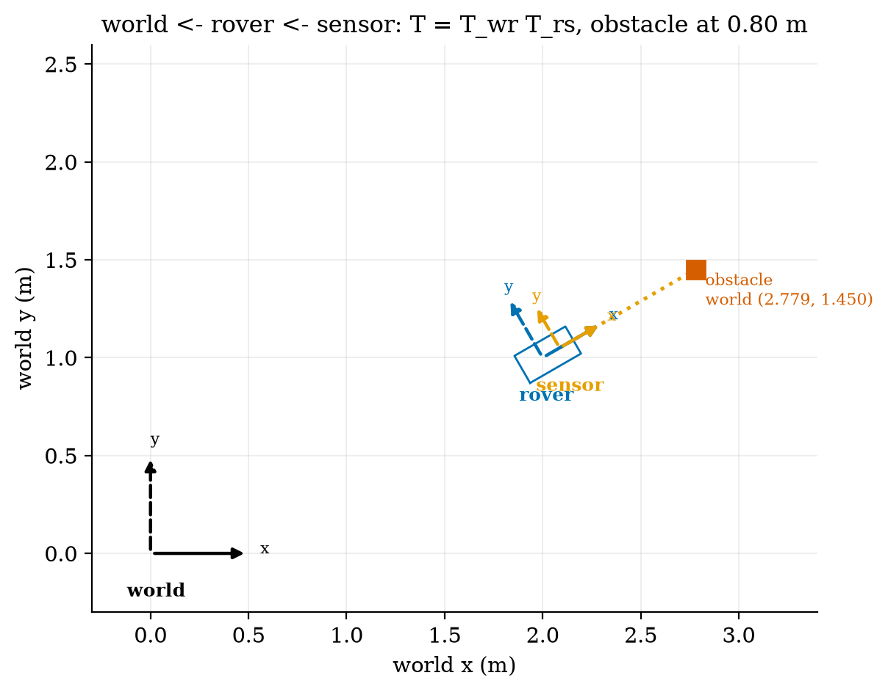
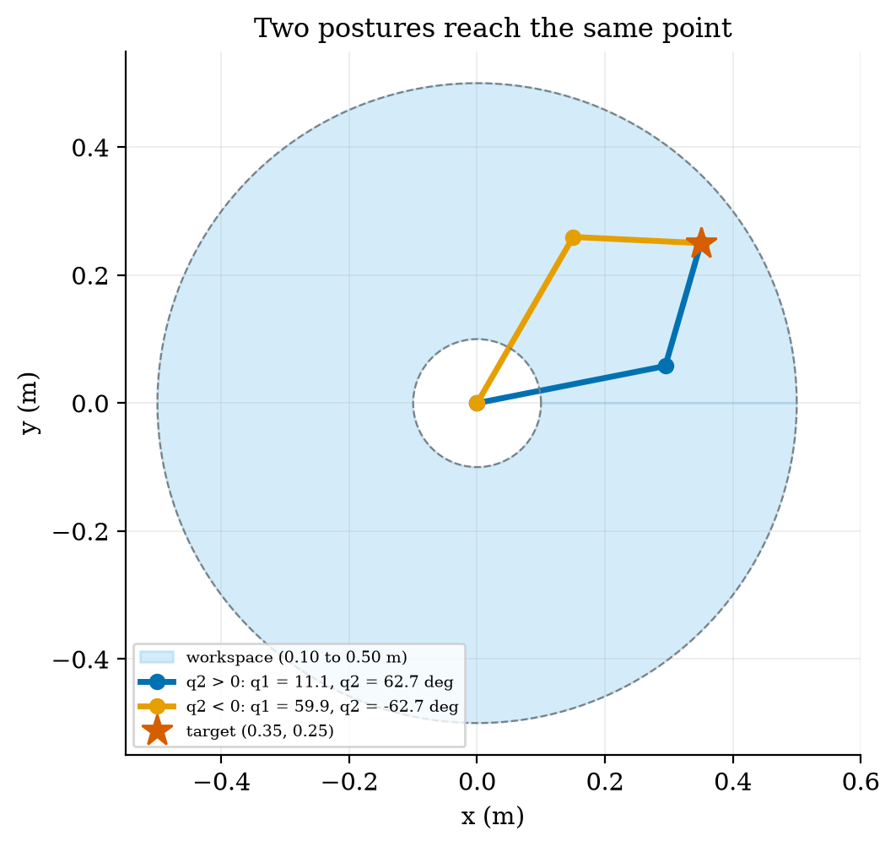
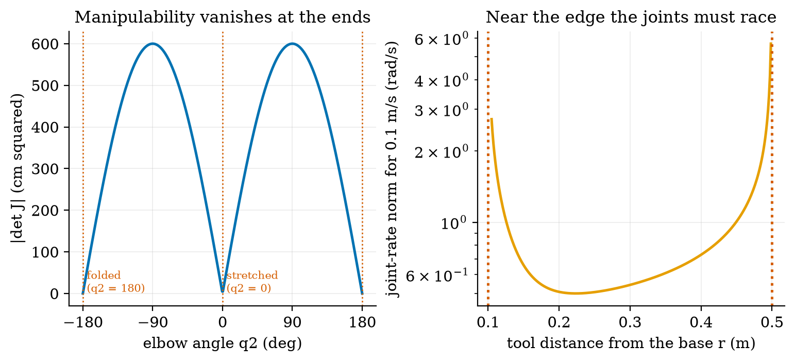
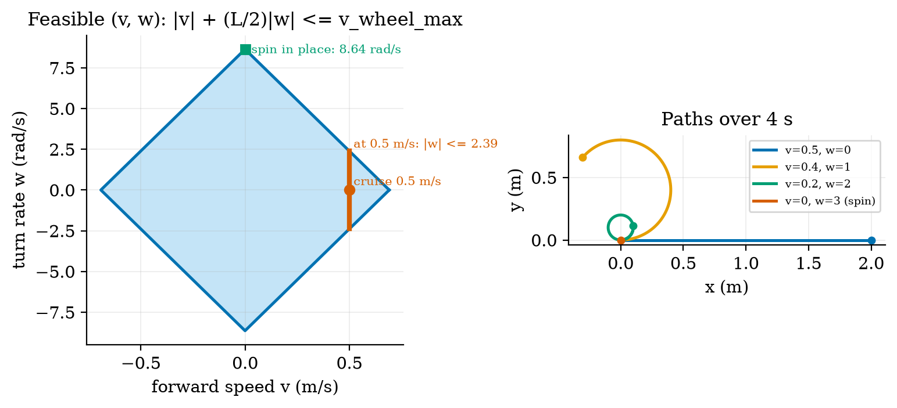
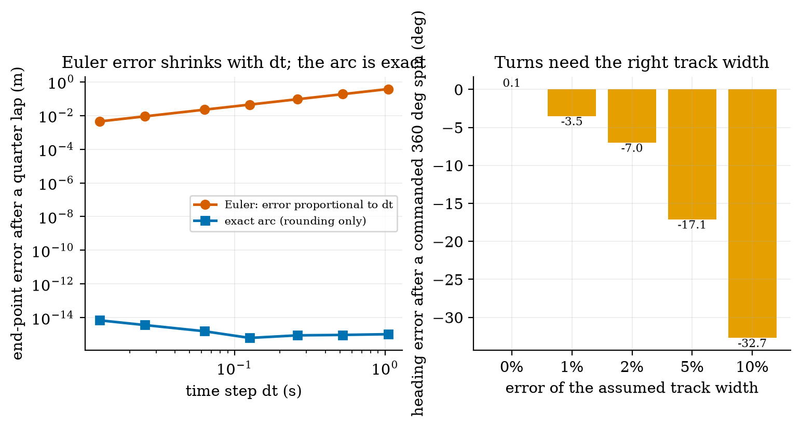
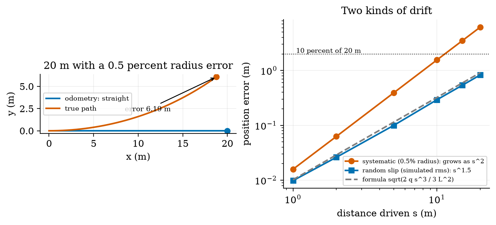

Unit 8 ready
Robot Kinematics: Frames, Arms, Wheels and the Drift of Dead Reckoning
Frames, rotations, the two-link arm, the Jacobian, differential drive and odometry drift.
Session map
After this session you can:
- describe a robot’s pose with a rotation matrix and a homogeneous transform, chain transforms (sensor to rover to world) and invert them;
- solve the forward and inverse kinematics of a 2-link arm in closed form, find its workspace and both postures for a target, and explain why the Jacobian’s determinant \ell_1\ell_2\sin q_2 marks its singularities;
- derive the differential-drive model, its feasible speed region and the exact arc update used for odometry;
- predict how dead-reckoning error grows with distance for a wheel-radius mismatch (as s^2) and for random slip (as s^{3/2}), check both by simulation, and calibrate the systematic part;
- use the shared rover simulator of this course (mass, wheels, encoder, track width) as the base for Units 9 to 11.
- Prerequisites: Unit 2 (the motor’s no-load speed), Unit 3 (the quadrature encoder and its 0.157 mm per count), basic trigonometry and 2\times2 matrices. Calculus for one derivative.
- Difficulty ladder used: easy → medium → medium-hard → hard (Sections 3.1 to 3.4); the hardest tier is posed as open questions in Section 3.5.
- Deliverables: this document (.tex, .pdf, .docx), 6 figures, the module
codes/robotics/kinematics_np/(SE(2) transforms, the 2-link arm, the differential-drive model, the sharedRoversimulator with encoders, wheel errors, slip and odometry, and the drift formulas; 8 tests), a sympy check of the Jacobian (analysis_sympy_log.txt) and the logs of every printed number. - Source anchors: this Unit derives its results from the stated geometry and quotes no paper or book. (The planned references, Lynch and Park, Modern Robotics, and Siegwart et al., Introduction to Autonomous Mobile Robots, were not consulted for any number here; the conventions below are the standard ones and every formula is checked symbolically with sympy or numerically against a simulation.) The nozzle-arm link lengths (0.30 m and 0.20 m), the rover’s track width (0.16 m), the wheel-radius error (0.5%), the slip variance and the sensor mounting are assumed round numbers; the mass, wheel radius, encoder and motor speed are those of Units 2 and 3.
1. Terms: the term tree
| Term | Symbol | One-line meaning | Where it appears | New / known |
|---|---|---|---|---|
| degrees of freedom (DOF) | the number of independent numbers that fix a mechanism’s configuration | 3.1 | new | |
| kinematics (forward, inverse) | motion without forces: from joint values to the tool position, and back | 3.3 | new | |
| coordinate frame | an origin and axes in which positions are written | 3.1 | new | |
| pose | (x,y,\theta) | position and heading of a frame | 3.1 | new |
| rotation matrix | R(\theta) | the matrix that turns a vector by \theta | 3.2 | new |
| homogeneous transform | T | a 3\times3 matrix holding a rotation and a translation, so that frames chain by multiplication | 3.2 | new |
| link and joint | a rigid part and the rotating connection between parts | 3.3 | new | |
| workspace | all points the tool can reach | 3.3 | new | |
| Jacobian | J | the matrix that maps joint rates to tool velocity | 3.3 | new |
| singularity and manipulability | \lvert\det J\rvert | a posture where J loses rank; a measure of how far from one | 3.3 | new |
| differential drive | two independently driven wheels on one axle; steering by speed difference | 3.4 | new | |
| track width | L | distance between the wheels’ contact points | 3.4 | new |
| non-holonomic constraint | a restriction on velocity (no sideways motion) that does not restrict reachable poses | 3.1 | new | |
| odometry and dead reckoning | estimating pose by adding up wheel motion from encoder counts | 3.4 | new | |
| systematic and random odometry error | repeatable (a wrong radius) and unpredictable (slip) errors | 3.4 | new | |
| wheel slip | wheel rotation that does not become ground travel | 3.4 | new |
Terms used but not taught here: 3-D rotations and quaternions (named only), dynamics of the arm (named only), the UMBmark calibration test (named only), Kalman filtering (Unit 10).
2. Remember
A coordinate frame is an origin and a set of axes. The pose of a planar frame is its position (x,y) and its heading \theta (counter-clockwise from the x axis), written in a parent frame. The degrees of freedom (DOF) of a mechanism are the independent numbers that fix its configuration: a rigid body in the plane has 3 (its pose); a 2-link arm has 2 (its two joint angles); a robot’s control inputs may be fewer than its DOF.
World frame: x east, y north. Body frame of the rover: x forward, y left, origin midway between the wheels. Angles in radians, counter-clockwise positive. A transform T_{ab} takes coordinates in frame b to coordinates in frame a.
Units 8 to 11 use one rover model (RoverParams): mass 1.5 kg, wheel radius 33 mm, track width 160 mm (new here, assumed), encoder 1320 counts per wheel revolution (0.157 mm per count, Unit 3), motor no-load speed 20.94 rad/s (200 rpm at 6 V, Unit 2), so a wheel speed limit of 20.94\times0.033=0.691 m/s, and a cruise speed of 0.5 m/s. It also carries a small nozzle arm with two links of 0.30 m and 0.20 m (assumed) for watering pots.
Memory hooks.
- A pose is three numbers; a transform is a pose you can multiply.
- Read a chain right to left: T_{ws}=T_{wr}\,T_{rs} means “a point in the sensor frame, moved into the rover frame, then into the world frame”.
- An arm near full stretch is a bridge near its limit: tiny tool motions need huge joint motions.
- Two wheels: the average moves you, the difference turns you.
- Odometry is a sum, and a sum of small mistakes grows. A wrong wheel radius grows as distance squared.
Before you read on: three predictions (answers in Section 10).
- The right wheel of the rover is 0.5% larger than the left (a manufacturing tolerance), but the software assumes they are equal. The rover is told to drive straight for 20 m. About how far from the straight line does it end: 2 cm, 20 cm or metres?
- A 2-link arm has links of 0.30 m and 0.20 m. The tool must move at 0.1 m/s radially. By roughly what factor are the joints’ speeds higher at 0.499 m from the base than at 0.30 m: 1.2, 13 or 100?
- The software assumes a track width 2% smaller than the true one. The rover is commanded to spin one full turn (360 degrees). By about how much does it miss: 1, 7 or 30 degrees?
Recall quiz (answers in Section 10).
- How many numbers describe the pose of a rover on a plane?
- Write the inverse of a transform with rotation R and translation t.
- For which joint angle of a 2-link arm is the arm singular, and what does that mean physically?
- How are the wheel speeds related to the body’s speed v and turn rate \omega?
- Why can a rover with a wrong wheel radius not be corrected by averaging more encoder readings?
3. Understand: the derivation
3.1 Tier 1 (easy): intuition and a picture
A robot needs to answer two questions: where is everything, and how do I move there. The first needs frames: the soil node’s position in the greenhouse, the rover’s pose in the greenhouse, the ultrasonic sensor’s position on the rover, and the obstacle’s position in the sensor’s own view. A sensor reports in its own frame (“0.80 m straight ahead”); the planner works in the world frame; the transforms between them are the whole job. Figure 1 shows a rover at pose (2.0,1.0) m with heading 30 degrees, a sensor mounted 0.10 m ahead of the rover’s centre, and an obstacle 0.80 m in front of the sensor. In the rover frame the obstacle is at (0.90,0); in the world frame it is at (2.779,1.450).

The rover has three DOF of pose, (x,y,\theta), but only two control inputs: forward speed v and turn rate \omega. It cannot slide sideways. This kind of restriction on velocity that does not limit where the robot can eventually get to (it can reach any pose by turning and driving) is called non-holonomic; it is why parallel parking needs a manoeuvre. The arm is the opposite case: two joints, two numbers, and the tool can be placed anywhere in its workspace directly.
3.2 Tier 2 (medium): frames, rotations and transforms
A vector p=(p_x,p_y) written in a frame that is rotated by \theta relative to its parent has parent-frame coordinates R(\theta)\,p with R(\theta)=\begin{pmatrix}\cos\theta&-\sin\theta\\ \sin\theta&\cos\theta\end{pmatrix}. \tag{1} To see why, take p=(1,0) along the child’s x axis: it points at angle \theta in the parent, so its parent coordinates are (\cos\theta,\sin\theta), the first column of R; likewise (0,1) becomes (-\sin\theta,\cos\theta), the second column. R is orthogonal (R^\top R=I: lengths and angles are preserved) with \det R=1, so its inverse is its transpose, R(\theta)^{-1}=R(-\theta) (the module’s test checks both).
A frame with origin at t=(x,y) in the parent maps a point by rotating and then translating, p'=R\,p+t. Writing points as (p_x,p_y,1)^\top makes this one matrix product, T=\begin{pmatrix}R&t\\ 0\;0&1\end{pmatrix},\qquad \begin{pmatrix}p'\\1\end{pmatrix}=T\begin{pmatrix}p\\1\end{pmatrix}. \tag{2} This is a homogeneous transform. Two transforms compose by matrix multiplication, T_{ac}=T_{ab}T_{bc} (take a point from c to b, then from b to a), and the inverse follows from solving p'=Rp+t for p: p=R^\top(p'-t)\quad\Longrightarrow\quad T^{-1}=\begin{pmatrix}R^\top&-R^\top t\\ 0\;0&1\end{pmatrix}. \tag{3} Check with Figure 1: the sensor is T_{rs}=\mathrm{se2}(0.10,0,0) and the rover T_{wr}=\mathrm{se2}(2.0,1.0,30^\circ). The obstacle (0.80,0) in the sensor frame is T_{rs}(0.80,0)=(0.90,0) in the rover frame and T_{wr}(0.90,0)=(2+0.90\cos30^\circ,\ 1+0.90\sin30^\circ)=(2.779,1.450) in the world frame; applying T_{wr}^{-1} returns (0.90,0) (script fig01_frames.py).
3.3 Tier 3 (medium-hard): the 2-link arm
3.3.1 Forward kinematics
A link is a rigid bar; a joint is a rotating connection. A planar arm with two joints has angles q_1 (link 1 from the x axis) and q_2 (link 2 relative to link 1) and link lengths \ell_1,\ell_2. Link 1’s tip (the elbow) is at \ell_1(\cos q_1,\sin q_1) and link 2 adds \ell_2 at angle q_1+q_2, so the tool is at x=\ell_1\cos q_1+\ell_2\cos(q_1+q_2),\qquad y=\ell_1\sin q_1+\ell_2\sin(q_1+q_2). \tag{4} The workspace is the set of reachable points. The distance of the tool from the base satisfies, by squaring and adding the two lines of (4) and using \cos^2+\sin^2=1 and the cosine of a difference, r^2=x^2+y^2=\ell_1^2+\ell_2^2+2\ell_1\ell_2\cos q_2 \tag{5} (sympy confirms this identity, analysis_sympy_log.txt), which varies between (\ell_1-\ell_2)^2 at q_2=\pi and (\ell_1+\ell_2)^2 at q_2=0. The workspace is therefore an annulus, |\ell_1-\ell_2|\le r\le\ell_1+\ell_2: for our arm, 0.10\le r\le0.50 m, an area of 0.754 m^2 for all base angles.
3.3.2 Inverse kinematics
Given a target (x,y) we want (q_1,q_2). Solving (5) for q_2 gives \cos q_2=\frac{x^2+y^2-\ell_1^2-\ell_2^2}{2\ell_1\ell_2},\qquad q_2=\pm\arccos(\cdot), \tag{6} which exists only if the right-hand side lies in [-1,1], exactly the annulus condition. Then q_1 is the direction to the target minus the angle that link 2 makes at the elbow: q_1=\operatorname{atan2}(y,x)-\operatorname{atan2}\!\big(\ell_2\sin q_2,\ \ell_1+\ell_2\cos q_2\big). \tag{7} The \pm in (6) gives two postures for every interior point (the two mirror images about the line from the base to the target; books call one “elbow up” and the other “elbow down” and disagree on which is which, so we say q_2>0 and q_2<0). For the target (0.35,0.25) m (r=0.430 m): q_2=\pm62.72^\circ with q_1=11.13^\circ for q_2>0 and q_1=59.95^\circ for q_2<0; forward kinematics of each returns (0.35,0.25) (Figure 2). The module tests 500 random reachable targets with both postures: forward kinematics of the solution reproduces the target to 10^{-12} m, and points at r=0.51 m or 0.05 m return no solution.

3.3.3 The Jacobian and singularities
Moving the tool at a given velocity needs joint rates. Differentiating (4) with respect to time gives \dot x=-(\ell_1s_1+\ell_2s_{12})\dot q_1-\ell_2s_{12}\dot q_2 and \dot y=(\ell_1c_1+\ell_2c_{12})\dot q_1+\ell_2c_{12}\dot q_2 with s_1=\sin q_1, s_{12}=\sin(q_1+q_2) and so on, i.e. \dot{\mathbf p}=J(q)\,\dot q with the Jacobian J=\begin{pmatrix}-\ell_1s_1-\ell_2s_{12}&-\ell_2s_{12}\\ \ell_1c_1+\ell_2c_{12}&\ell_2c_{12}\end{pmatrix},\qquad \det J=\ell_1\ell_2\sin q_2. \tag{8} (The determinant is verified symbolically by sympy, and J against central finite differences at 50 random postures to 10^{-8}.) To find the joint rates for a wanted tool velocity solve J\dot q=\dot{\mathbf p}; the inverse contains the factor 1/\det J=1/(\ell_1\ell_2\sin q_2) (sympy: every entry of J^{-1} has \sin q_2 in its denominator). At q_2=0 (arm fully stretched) or q_2=\pm\pi (folded) the determinant is zero: the arm is singular. Physically, at full stretch the tool can only move perpendicular to the arm; to move it along the arm (outward or inward) would need infinite joint speed. Near a singularity the needed rates blow up like 1/\sin q_2.
Numbers for the nozzle arm (Figure 3). |\det J| peaks at \ell_1\ell_2=600 cm^2 for q_2=\pm90^\circ and is only 52.3 cm^2 at q_2=5^\circ. To move the tool radially at 0.1 m/s the joint-rate norm needed is 0.659 rad/s at r=0.15 m, 0.543 rad/s at r=0.30 m (nearly the minimum), 1.006 at 0.45 m, 2.21 at 0.49 m and 6.96 rad/s at 0.499 m, a factor of 6.96/0.543=12.8 higher than at 0.30 m: prediction 2 of Section 2: about 13. The usable workspace, where 0.1 m/s needs at most 1.0 rad/s, is 0.126\le r\le0.449 m: roughly the outer 13% and the inner 7% of the annulus’s width are poor places to aim for.

3.4 Tier 4 (hard): the differential-drive rover and its odometry
3.4.1 The model
Let the left and right wheels travel at ground speeds v_L,v_R. The body’s forward speed is the average and its turn rate the difference over the track width: v=\frac{v_R+v_L}{2},\qquad \omega=\frac{v_R-v_L}{L},\qquad\Longleftrightarrow\qquad v_L=v-\frac{L}{2}\omega,\quad v_R=v+\frac{L}{2}\omega. \tag{9} (The turn rate is the difference of the two ends of a rigid axle, one moving v_R and the other v_L, divided by the distance between them.) The pose changes as \dot x=v\cos\theta, \dot y=v\sin\theta, \dot\theta=\omega. With wheel angular speeds \omega_{L,R} and radius r, v_{L,R}=r\omega_{L,R}.
Which (v,\omega) are possible? Each wheel speed is limited by the motor to v_w=0.691 m/s (Unit 2: no-load 20.94 rad/s times 33 mm). The conditions |v\mp\frac L2\omega|\le v_w together say |v|+\frac L2|\omega|\le v_w, \tag{10} a diamond in the (v,\omega) plane (Figure 4, left). Its corners give the extremes: \omega_{\max}=2v_w/L=8.64 rad/s (495 degrees per second) when spinning in place (v=0), and v_{\max}=0.691 m/s straight. At the cruise speed of 0.5 m/s only |\omega|\le2(v_w-0.5)/L=2.39 rad/s remains, so the tightest turn at cruise speed has radius v/\omega=0.209 m; slowing to v=0.2 m/s allows \omega=2 rad/s and a radius of 0.10 m (Figure 4, right).

3.4.2 Integrating the motion exactly
Over a short interval with constant wheel travels \Delta s_L,\Delta s_R the rover follows a circular arc of radius R_c=\Delta s/\Delta\theta with \Delta s=\frac12(\Delta s_R+\Delta s_L) and \Delta\theta=(\Delta s_R-\Delta s_L)/L; integrating \dot x=v\cos\theta, \dot y=v\sin\theta along the arc gives the exact update x'=x+R_c\big(\sin(\theta+\Delta\theta)-\sin\theta\big),\quad y'=y-R_c\big(\cos(\theta+\Delta\theta)-\cos\theta\big),\quad \theta'=\theta+\Delta\theta, \tag{11} with the straight-line limit x'=x+\Delta s\cos\theta, y'=y+\Delta s\sin\theta when \Delta\theta\to0 (the module’s arc_pose). The simple alternative, Euler integration, moves along the old heading, x'=x+v\cos\theta\,\Delta t, and turns afterwards. Its error is first order in the step: for a 1 m radius circle at 0.5 m/s, the end-point error after a quarter lap is 0.372 m for steps of 1.05 s, 0.185 m for 0.52 s, 0.093 m for 0.26 s, 0.044 m for 0.126 s and 0.0044 m for 0.0126 s: halving the step halves the error. The exact arc has an error of 10^{-15} m (rounding only). (A full lap with whole steps closes exactly even for Euler: it traces a regular polygon, whose circumradius is R\,(\omega\Delta t/2)/\sin(\omega\Delta t/2)=1.0115R at 12 steps per lap; closure is therefore the wrong test, and an earlier version of our figure made that mistake before we looked at the numbers.)

3.4.3 Odometry from encoder counts
The encoders count wheel rotation. A count increment \Delta N means \Delta N\cdot d metres of wheel travel with d=2\pi r/\mathrm{CPR}=0.1571 mm per count (Unit 3). The rover feeds \Delta s_L=d\,\Delta N_L and \Delta s_R=d\,\Delta N_R into (11) to update its odometry pose, dead reckoning: estimating pose by adding up motion. The resolution is fine: one count of one wheel changes the heading by d/L=0.98 mrad (0.056 degrees) and the position by 0.157 mm. With ideal wheels the module’s Rover keeps odometry and true pose within 2 mm and 0.01 rad after 15 s of driving (test). The trouble is not the counting; it is that counts are turned into distance with assumed numbers (radius, track) and that wheels slip.
3.4.4 How odometry drifts: a wrong wheel radius
Suppose the right wheel’s true radius is (1+\varepsilon) times the assumed one, and the rover is commanded to drive straight, so both encoders count the same. The odometry believes both wheels travelled s; truly the left wheel travelled s and the right (1+\varepsilon)s. The true heading changes by \Delta\theta=(s_R-s_L)/L=\varepsilon s/L: the heading error grows linearly with distance, and a small radius error is divided by the small track width. The path is a circular arc of radius R_c=\frac L2\frac{s_R+s_L}{s_R-s_L}=\frac{L(2+\varepsilon)}{2\varepsilon}\approx L/\varepsilon, whose end point is (R_c\sin\Delta\theta,\ R_c(1-\cos\Delta\theta)); for small angles the sideways error is y\approx\frac{\varepsilon s^2}{2L}. \tag{12} For \varepsilon=0.5\% and L=0.16 m, over s=20 m: \Delta\theta=0.625 rad (35.8 degrees), R_c=32.08 m, the true end point is (18.77,\ 6.064) m while the odometry says (20,0): a position error of 6.19 m, 30.9% of the distance (prediction 1 of Section 2: metres). The simulator agrees with the arc to the printed digits. The error grows as s^2: 0.016 m at 1 m, 0.39 m at 5 m (7.8%), 1.56 m at 10 m (15.6%), 6.19 m at 20 m. (The 0.5% is an assumed tolerance of a cheap wheel.)
Calibration. Equation (12) can be inverted: drive straight for a known distance, measure the sideways deviation y, and estimate \varepsilon=2Ly/s^2. From the simulated 5 m run, y=0.3908 m gives \varepsilon=0.00500, exact. The estimate’s resolution is \delta\varepsilon=2L\,\delta y/s^2: with a 1 cm measuring error and a 5 m run, 1.3\times10^{-4} (0.013%), so a tape measure suffices to bring the radius mismatch below the levels that matter (next).
3.4.5 Random drift, and the track width
Wheels also slip randomly. Model the travel of each wheel over a step as its nominal value plus an independent error of variance q\,|\Delta s| (variance proportional to distance, q in m^2 per metre; assumed 4\times10^{-6}, about 2 mm standard deviation per metre). Per step the heading changes by (\delta s_R-\delta s_L)/L, of variance 2q\,\Delta s/L^2; summed over independent steps the heading variance grows linearly, \sigma_\theta^2(s)=2qs/L^2. The sideways position is the integral of the heading, y(s)=\int_0^s\theta(u)\,du, so \mathrm{Var}\,y(s)=\int_0^s\!\!\int_0^{s}\frac{2q\min(u,u')}{L^2}\,du\,du'=\frac{2q\,s^3}{3L^2},\qquad\sigma_y=\sqrt{\frac{2q\,s^3}{3L^2}}. \tag{13} The random error grows as s^{3/2}, more slowly than the systematic one (s^2) but without a calibration cure. With the assumed q and L=0.16 m, \sigma_y=0.913 m at 20 m (4.6%); the simulation (60 runs per distance, root-mean-square total position error) gave 0.010, 0.026, 0.100, 0.293, 0.538 and 0.831 m at 1, 2, 5, 10, 15 and 20 m, against the formula’s 0.010, 0.029, 0.114, 0.323, 0.593 and 0.913 m: the simulated values are 9 to 12% below the formula for 5 m and more, which is consistent with the 9% sampling error of a standard deviation from 60 runs, though a small systematic offset is possible and was not investigated.

The track width matters differently: it does not affect straight lines at all but scales every rotation. If the true track is (1+e) times the assumed one, a commanded spin that the odometry counts as 360 degrees is truly 360^\circ/(1+e), an error of 360^\circ(1/(1+e)-1): -3.56^\circ for e=1\%, -7.06^\circ for 2% (prediction 3 of Section 2: about 7), -17.14^\circ for 5% and -32.73^\circ for 10%. The simulator gave -3.52, -7.01, -17.11 and -32.71 (a 0.34-degree overshoot of the stopping rule explains the small difference). Wheel radius governs the straights, track width the turns: calibrate both.
3.5 Tier 5 (hardest): open questions
- Can a non-holonomic rover reach every pose, and at what cost? Show that with only v and \omega a rover can reach any (x,y,\theta), and describe a sequence of motions that moves it 10 cm sideways. Why is this a problem for a planner (Unit 11)?
- Which error model is right? Our slip model has variance proportional to distance. Real slip depends on the floor, the speed and the acceleration, and is partly systematic (a floor that drags one side). Design an experiment with a tape measure and a protractor that separates the three effects (radius, track width, random slip).
- Beyond the plane. A rover on a slope or a drone needs 3-D rotations. Why can three angles (Euler angles) fail near a singularity, and how does the arm’s Jacobian singularity compare with that failure? (Quaternions are named, not taught.)
4. Apply
4.1 Worked problems
Problem 1 (transforms). The rover is at pose (1.0,2.0) m with heading 90 degrees. A watering pot is at (0.5,0.2) m in the rover frame. Where is it in the world frame?
Solution. R(90^\circ)=\begin{pmatrix}0&-1\\1&0\end{pmatrix}, so R(0.5,0.2)^\top=(-0.2,0.5); adding t=(1,2) gives (0.8,2.5) m.
Problem 2 (inverse kinematics). For links 0.30 m and 0.20 m, find both postures for the target (0.10,0.40) m.
Solution. r^2=0.17; \cos q_2=(0.17-0.09-0.04)/(2\times0.06)=0.3333, q_2=\pm70.53^\circ. For q_2=+70.53^\circ: q_1=\operatorname{atan2}(0.4,0.1)-\operatorname{atan2}(0.2\sin70.53^\circ,\ 0.3+0.2\times0.3333)=75.96^\circ-27.21^\circ=48.75^\circ; for q_2=-70.53^\circ: q_1=103.18^\circ. Both give (0.10,0.40) by forward kinematics.
Problem 3 (wheel speeds). Find the wheel speeds (m/s and rad/s) for v=0.3 m/s and \omega=1.5 rad/s with L=0.16 m, and say whether the motors can deliver them.
Solution. v_L=0.3-0.12=0.18 m/s and v_R=0.42 m/s, i.e. 5.455 and 12.727 rad/s (divide by 0.033 m). Both are below the 0.691 m/s limit: feasible (0.3+0.08\times1.5=0.42\le0.691).
Problem 4 (drift). A wheel-radius mismatch of 0.2% over 10 m of straight driving: heading error and position error?
Solution. \Delta\theta=\varepsilon s/L=0.002\times10/0.16=0.125 rad =7.2^\circ (exact arc: 7.16 degrees); position error \varepsilon s^2/(2L)=0.002\times100/0.32=0.625 m (exact: 0.625 m).
Problem 5 (resolution). One wheel turns by 2000 counts while the other stands still. How far does that wheel travel, and by how much does the heading change?
Solution. 2000\times0.1571 mm =314.2 mm; the heading changes by 0.3142/0.16=1.963 rad =112.5^\circ (pivoting about the stationary wheel).
4.2 Code and figures
import kinematics_np as K
T = K.se2(2.0, 1.0, 0.5236) @ K.se2(0.10, 0.0, 0.0) # world <- rover <- sensor
print(K.transform_point(T, (0.80, 0.0))) # [2.779 1.45]
q = K.ik_2link(0.35, 0.25, 0.30, 0.20, "up") # (q1, q2) in radians, or None
print(K.fk_2link(q, 0.30, 0.20), K.jacobian_2link(q, 0.30, 0.20))
r = K.Rover(eps_r=0.005) # right wheel 0.5% large (true), software unaware
r.drive(v=0.5, w=0.0, t=40.0) # 20 m "straight"
print(r.pose, r.odom, r.position_error()) # true (18.77, 6.06), odometry (20, 0), error 6.19 mThe module and its README are in codes/robotics/kinematics_np/. Its eight tests check: SE(2) properties (orthogonality, inverse, chaining); 500 random IK/FK round trips for both postures and the unreachable cases; the Jacobian against finite differences and its determinant; the wheel-speed conversions and the feasible region; the exact arc against Euler on a circle; ideal odometry against truth to within the counting resolution; the systematic drift against the closed form (to 1%); and the random drift against its formula (to 20%).
What would look different if the theory were wrong? If (8) were wrong, the finite-difference check and sympy would disagree; they agree to 10^{-8} and symbolically. If (12) were wrong the simulated path would miss the arc; the end points agree to the printed digits. If (13) were wrong the simulated errors would not scale as s^{3/2}; they do, within the sampling error of the 60 runs.
5. Analyze
Limits. As \varepsilon\to0 the drift vanishes, linearly in \varepsilon and quadratically in distance; as L\to\infty the same \varepsilon matters less (a wider rover turns less for the same wheel difference). As q_2\to0 the arm’s rates diverge as 1/\sin q_2; as \Delta t\to0 Euler converges to the arc.
Dominance. Setting \varepsilon s^2/(2L)=\sqrt{2q/3}\,s^{3/2}/L gives the distance where the two errors are equal, \sqrt s=2\sqrt{2q/3}/\varepsilon=0.65, i.e. s=0.43 m for \varepsilon=0.5\%: the random part is the larger only below about 40 cm. At 20 m the systematic radius error (6.19 m) is 7.4 times the random one (0.83 m). Calibrating the systematic part is therefore the first thing to do.
Order-of-magnitude estimate. Heading error \approx\varepsilon s/L=0.005\times20/0.16\approx0.6 rad: more than half a radian after 20 m from a half-percent tolerance, the number to remember about differential-drive odometry.
Sensitivity. Drift scales with \varepsilon/L: halving L doubles it. The R5 budget: with random drift 0.83 m at 20 m and a limit of 10% (2.0 m), the systematic part may contribute \sqrt{2.0^2-0.83^2}=1.82 m, i.e. \varepsilon\le0.147\%.
Failure modes. (1) Uncalibrated wheels: metres of error. (2) Wrong track width: wrong turns. (3) Slip (wet floor, wheelspin at start): the encoders do not see it. (4) Euler integration with large steps. (5) A singular arm posture: huge joint rates (and motor limits). (6) Mixing frames (sensor, body, world): the most common bug.
Items used from the pedagogy checklist: limits, dominance, estimate, sensitivity, failure modes, invariants (orthogonality, FK(IK)=target), convergence (Euler against the arc), residual (the 9 to 12% gap in the random-slip check, reported not hidden), and a priori versus a posteriori (the drift was predicted before it was simulated).
6. Evaluate
Differential drive versus alternatives. Two driven wheels plus a caster is the cheapest and turns in place, at the cost of the non-holonomic restriction and slip when turning; a car-like (Ackermann) base has a minimum turning radius and is better at speed; an omnidirectional base moves sideways but slips more and costs more; a tracked base turns by skidding (large, unmodelled slip). For a greenhouse with rows 0.5 m wide, in-place turning matters, so differential drive is the right choice.
Closed-form versus numerical IK. The closed form for two links is exact and instant; for arms with more joints there is no general closed form and one uses numerical methods built on the Jacobian (named, not taught). The Jacobian also serves collision-avoiding and velocity control.
Odometry alone. It is free (the encoders are there anyway), accurate for short distances and smooth (no jumps), and useless over long distances unless calibrated and corrected by something that sees the world: Unit 10.
Context. The mathematics of frames and rotations is classical mechanics and linear algebra; the dead-reckoning problem is as old as ship navigation. When NOT to use these models: at high speed or on soft ground (slip and dynamics dominate and the no-slip model of (9) fails), for a heavy arm moving fast (dynamics, inertia and gravity matter: named, not covered), and in 3-D without 3-D rotations.
Honesty about this Unit’s numbers. The formulas are exact consequences of the stated geometry and were checked symbolically (sympy) or against simulations of the same geometry; they say nothing about a real chassis. The link lengths, track width, wheel-radius error and slip variance are assumed. The random-drift check agrees with its formula only within the sampling error of 60 runs, with a possible small offset of 9 to 12% that was not investigated further. The textbooks named in the plan were not consulted.
7. Create
- Calibrate a simulated rover. Give
Roveran unknown \varepsilon and a track error, run the straight and spin experiments, estimate both with \varepsilon=2Ly/s^2 and the spin formula, and show the position error at 20 m before and after. - A reachable-points map. For the nozzle arm, colour the usable workspace (joint rate under 1 rad/s for 0.1 m/s) and mark where a pot at a given position can be watered from the rover’s parking spot.
- Parallel parking. Using only (v,\omega) commands, find a sequence that moves the rover 10 cm sideways and measure the path length it needs.
- Slip on a slope. Add a systematic slip to one wheel only and see how it differs from a radius error in the heading drift and in the odometry.
- Could become a package module:
iotrobotics.kinematicswith the transforms, the arm, the diff-drive model and theRoverbase class that Units 9 to 11 extend.
Running project, Layer 7: the motion model. The rover now has a model (RoverParams, Rover), a wheel-speed region, an exact odometry update and a drift budget; its nozzle arm has closed-form kinematics and a usable workspace. Updated requirements:
| id | requirement | status after Unit 8 |
|---|---|---|
| R5 | position error after a 20 m patrol under 10% | fails uncalibrated: a 0.5% radius error gives 6.19 m (30.9%); random slip alone gives 0.83 m (4.2%, simulated); odometry alone meets R5 only if the radius mismatch is calibrated to at most 0.147%; calibration by one 5 m run and a tape measure resolves 0.013% |
| R27 (new) | the rover turns correctly in place | needs the track width within 1% (3.6 degrees error per full spin); measure it with a spin test |
| R28 (new) | the nozzle arm reaches pots at 0.15 to 0.45 m | usable workspace 0.126\le r\le0.449 m (joint rate \le1 rad/s for 0.1 m/s); both postures exist for every interior point |
| R29 (new) | turning radius at cruise speed | 0.209 m at 0.5 m/s (wheel speed limit 0.691 m/s); 0.10 m at 0.2 m/s; rows must be wider than 0.42 m for a U-turn at cruise speed |
| R3, S1 | collision stop (Unit 1), safe state (Unit 7) | unchanged; the rover model gives the shared parameters used to test them in Units 9 and 11 |
8. Visualization lesson
| Chart type | Best for | How it misleads | matplotlib call |
|---|---|---|---|
| frame diagram (axes as arrows) | the relation between coordinate frames | arrow lengths are arbitrary; do not read distances from them | ax.annotate("", xy, xytext, arrowprops=...) |
| workspace plot (shaded annulus with postures) | what a mechanism can reach | the shading ignores joint limits, collisions and singular neighbourhoods | ax.fill(...), ax.plot(...) |
| curve with singular points marked | how a quantity vanishes (determinant against joint angle) | a smooth curve hides that the inverse blows up at the zeros | ax.plot(q2, det), ax.axvline(0, ls=":") |
| semi-log curve with limit lines | a quantity that diverges (joint rates) | the log axis shrinks the blow-up; print the numbers | ax.semilogy(r, rates) |
| feasible-region polygon | the set of allowed commands | the polygon is a limit, not a recommendation: near its edge the margin is zero | ax.fill(x, y, alpha=0.3) |
| equal-aspect trajectory plot | paths in the plane | unequal axis scales bend circles into ellipses | ax.set(aspect="equal") |
| log-log error against distance with slope reference | the growth law of an error (s^2, s^{1.5}) | a straight line fits many laws over one decade; compare with the formula | ax.loglog(s, e) |
| bar of signed errors | a signed deviation per condition (heading error against track error) | a negative bar is the same size of error as a positive one | ax.bar(x, err) |
Reading Figure 5 (right) as a chart. Two straight lines on log-log axes with slopes 2 and 1.5 are the content: the slope is the growth law. The dotted horizontal line is the requirement; where a curve crosses it (about 11 m for the systematic error) is the distance after which the rover cannot be trusted without correction.
9. Problem set
- (easy) A sensor at (0.12,0) in the rover frame sees an object at (0.5,-0.1) in its own frame (axes parallel to the rover’s). Give the object’s rover-frame coordinates.
- (medium) For links 0.25 m and 0.25 m, what is the workspace, and what happens at the origin? Find both postures for the target (0.25,0.25).
- (medium-hard) The nozzle arm must move its tool at 0.1 m/s tangentially (perpendicular to the line from the base) at r=0.499 m. Use the Jacobian to find the joint rates and compare with the radial case at the same radius. Which direction is easier at full stretch, and why?
- (hard) A rover has a left wheel 0.3% small and a right wheel 0.2% large, and the track width is 1% too small in the software. It is asked to drive a straight 10 m and then spin 180 degrees. Estimate the heading and position errors (small-angle formulas), and say which error dominates.
- (hardest) Derive (13): show that if \theta(u) has independent increments of variance 2q\,du/L^2 then \mathrm{Var}\int_0^s\theta\,du=2qs^3/(3L^2), and find the distance at which the random lateral standard deviation equals the systematic error of a 0.1% radius mismatch (use q=4\times10^{-6} and L=0.16 m).
10. Retrieval practice and recap
Answers to the Section 2 predictions.
- Metres: 6.19 m after 20 m (30.9% of the distance), because the heading error \varepsilon s/L=0.625 rad integrates into a sideways error.
- About 13: 6.96 rad/s at 0.499 m against 0.543 rad/s at 0.30 m.
- About 7 degrees (7.06 by the formula, 7.01 simulated).
Answers to the Section 2 recall quiz.
- Three: (x,y,\theta).
- T^{-1} has rotation R^\top and translation -R^\top t.
- q_2=0 (stretched) or \pm\pi (folded); \det J=\ell_1\ell_2\sin q_2=0: the tool cannot move along the arm without infinite joint speed.
- v=(v_R+v_L)/2 and \omega=(v_R-v_L)/L.
- A wrong radius is a systematic error: the same in every count, so averaging does not remove it; it must be calibrated.
Explain it to a friend.
- Why does a 0.5% wheel difference ruin a 20 m straight drive but not a 20 cm one?
- Why does an arm with its elbow straight need huge joint speeds to move its hand outward?
- Why does the track width matter for turning but not for driving straight?
Re-derive by hand tomorrow, without looking: (a) the IK law of cosines (6) and q_1 from (7); (b) the Jacobian determinant \ell_1\ell_2\sin q_2; (c) the drift \varepsilon s^2/(2L) of a radius mismatch.
11. Where next
- Unit 9 gives the wheels dynamics and a controller: the DC motor as a first-order system, P, PI and PID speed control, step-response metrics, tuning and integral windup, closing the loop around the rover model of this Unit (the shared
Rovergains motor dynamics). - Terms named here but not taught: 3-D rotations and quaternions, arm dynamics, the UMBmark test. They are registered in CURRICULUM.md.
- Open threads: the planned reference books were not consulted; the arm and the track width are assumed; the 9 to 12% gap between the simulated random drift and its formula was not investigated beyond the sampling error; R5 is open until Unit 10.